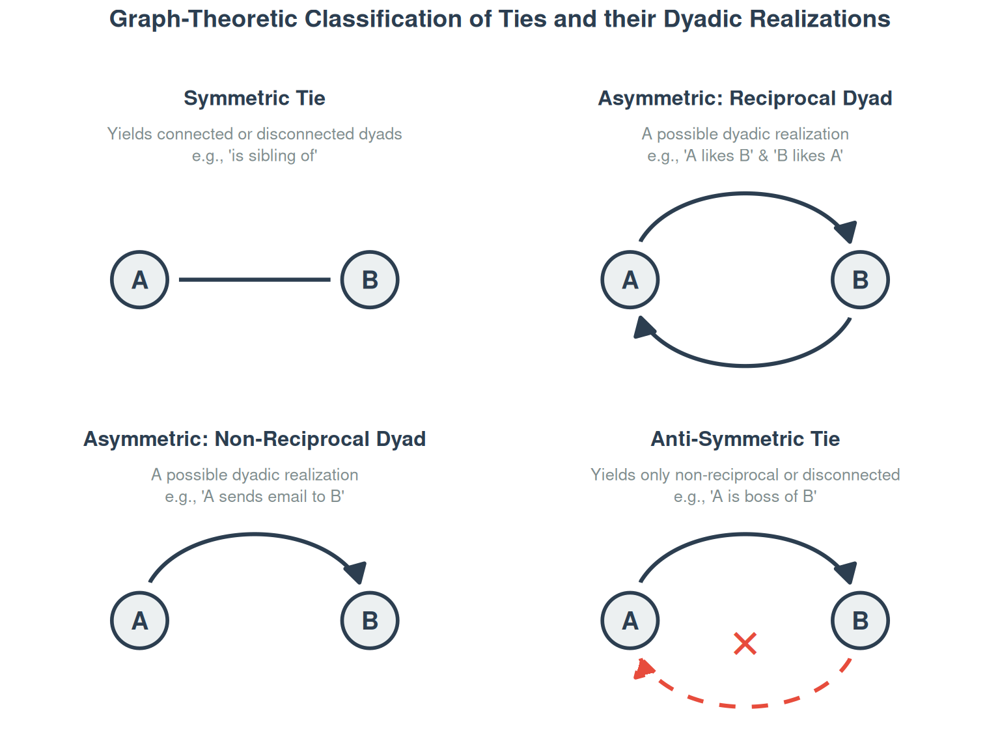
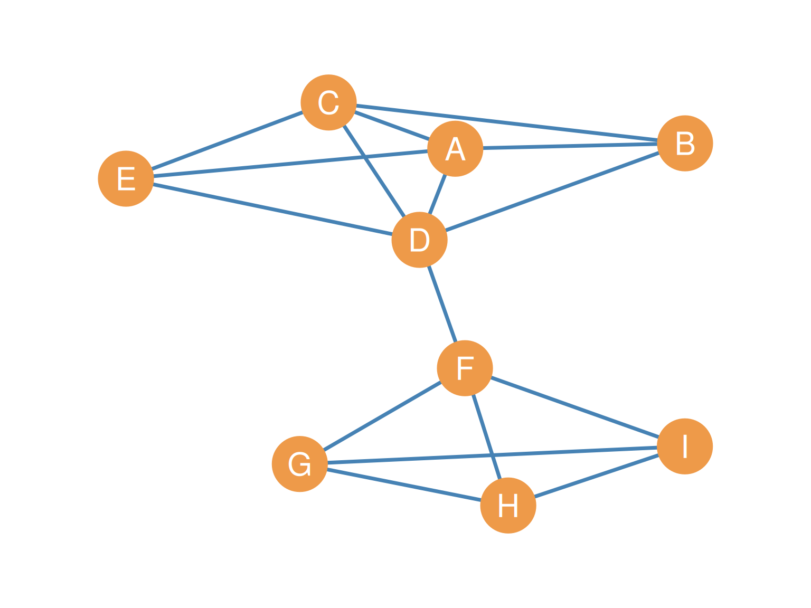
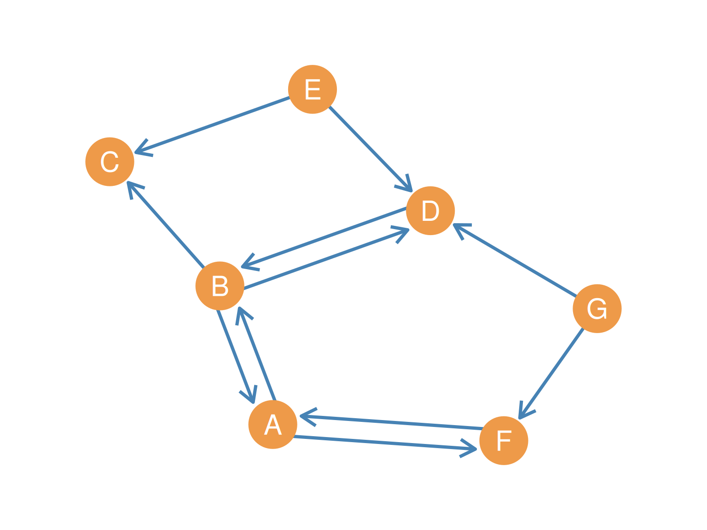

7 Types of Ties and Their Graphs
7.1 Introduction
Nodes and edges are the fundamental building blocks of a graph. However, the types of relationships that the edges represent can change both how we understand the network conceptually and what mathematical techniques we can apply to the graph when computing graph metrics (the subject of Chapter 9). When doing social network analysis, we map our understanding of the nature of the social relationships we are studying to the types of graphs we use to represent the network formed by the concatenation of those relationships (Martin 2009).
Martin, John Levi. 2009. Social Structures. Princeton University Press.
This chapter integrates the sociological classification of social ties with their graph-theoretic representations, showing how different social relations match the mathematical properties and structures of the networks they create when they are concatenated.
7.2 Symmetric Ties and Undirected Graphs
By definition, some relations lack any inherent directionality. Mutuality (or reciprocity) is built in by construction. For example, “spending time together” or “being siblings” are relations where mutuality is logically and necessarily implied. For instance, it would be nonsensical for you to claim that you spend time with another person and for that person to say that they do not spend time with you. The same would apply to other symmetric ties, like living in the same place, going to the same school, or being a member of the same ethnic group.
In social network analysis, these are called symmetric ties (Heider 1946). Formally, if a tie is symmetric, then the existence of a tie from A to B logically implies that B is also tied to A (\(AB \implies BA\)).
In that respect, the relations of similarity (having similar socio-demographic attributes (e.g., sharing nationality or gender) and propinquity or co-location (being in the same place at the same time)) are symmetric ties. The same goes for common affiliations, like “being in the same class as” every other student in your seminar. All co-memberships (in groups, nations, political parties, and so on) create symmetric ties among all involved actors (we will revisit this in Chapter 25). If A is a teammate of B in a soccer club, then B is necessarily a teammate of A.
Social networks composed of symmetric ties are represented as undirected graphs, such as the one shown in Figure 7.1. As we saw in Chapter 6, when an undirected graph has no loops (edges connecting a node to itself), and there is only one edge connecting adjacent vertices to one another (the graph has no multiedges), it is called a simple undirected graph. As we also saw, in undirected graphs, the order in which we name the nodes in an edge does not matter (\(AB\) and \(BA\) refer to the exact same edge).

7.3 Asymmetric Ties and Directed Graphs
In contrast to co-membership or spending time together, many social relationships allow for inherent directionality. These are represented by asymmetric ties (Heider 1946). When it comes to these ties, one member of a pair can claim a relationship with the other, but it is possible (though not necessary) that the other person does not send the same relationship back.
Heider, Fritz. 1946. “Attitudes and Cognitive Organization.” The Journal of Psychology 21 (1): 107–12.
Helping, texting, and social support relations are prime examples. You can help someone with their homework or give them personal advice, but this does not necessarily mean that that person will return the favor. Mutuality or reciprocity is not built-in by definition; instead, it must happen as an empirical event in the world.
Social networks composed of asymmetric ties are represented by directed graphs (or digraphs). Figure 10.1 shows a point-and-line diagram of a digraph, where simple undirected lines are replaced by directed arrows (also called arcs).

In a directed graph, for every edge, there is a source node and a destination node. Therefore, the order in which you list the nodes when you name the edges matters. The edge \(AB\) is a different entity from the edge \(BA\) because one can exist without the other existing. When a digraph has no loops and at most one directed edge connecting a sender to a receiver in each direction, it is called a simple directed graph.
7.3.1 Reciprocity as an Empirical Concept
In networks composed of asymmetric ties, reciprocity is a major analytical focus. For some asymmetric ties (such as liking, trusting, or friendship), reciprocity is binary; it either exists or it does not. For other ties (such as communication networks built on text volume or call duration), reciprocity is a matter of degree. For instance, you can text someone 10 times a day, but they may text you back only half the time.
If Figure 10.1 were an advice network (Cross et al. 2001), we could say that H seeks advice from D, but D does not seek advice from H. This lack of reciprocity is common in formal hierarchies, where advice-seeking often flows upward to more experienced or authoritative actors, reflecting power differentials. In contrast, in a friendship network, we would expect a much higher level of reciprocity, as mutual liking is often a defining feature of friendship ties.
Cross, Rob, Stephen P Borgatti, and Andrew Parker. 2001. “Beyond Answers: Dimensions of the Advice Network.” Social Networks 23 (3): 215–35.
7.4 Sociological versus Graph-Theoretic Classification of Ties
7.4.1 Graph-Theoretic Classification of Ties
In graph theory, we categorize directed and undirected ties based on their inherent directionality. Figure 7.3 provides a visual summary of these types.
The first type is the symmetric tie, a relation that lacks any inherent directionality (e.g., “is sibling of”). Formally, if a tie is symmetric, then \(AB \iff BA\). Symmetric ties are represented by undirected graphs, and at the dyadic level they can only yield disconnected or connected dyads.
The second type is the asymmetric tie, a relation with a natural directionality represented by directed graphs, where reciprocity is possible but not mathematically guaranteed (\(AB \implies\) nothing about \(BA\)). At the dyadic level, asymmetric ties can be realized in three ways. In disconnected dyads, neither node sends a tie to the other. In non-reciprocal dyads, only one node sends a tie (e.g., sending an email without getting a reply). In reciprocal dyads, both nodes send a tie to each other (e.g., mutual liking or active email exchange).
The third type is the anti-symmetric tie, a relation that is inherently directional and where reciprocity is strictly forbidden (\(AB \implies \neg BA\)). Examples include hierarchical relations like “is boss of” or “is parent of”. At the dyadic level, anti-symmetric ties can only yield disconnected or non-reciprocal dyads, since reciprocal dyads are impossible.
7.4.3 Mapping Sociological to Graph-Theoretic Classifications
To use social network analysis effectively, we must map our sociological understanding of ties to their appropriate mathematical representations. Table 7.2 synthesizes the links between the sociological categories of ties and their graph-theoretic classifications.
| Sociological Category | Sociological Type | Graph-Theoretic Class | Mathematical Properties | Key Dyadic Realizations | Examples |
|---|---|---|---|---|---|
| States | Similarities | Undirected Graph | Symmetric (\(AB \iff BA\)) | Connected / Disconnected | Co-membership, propinquity, shared attributes |
| States | Social Relations | Undirected or Directed Graph | Symmetric, Asymmetric, or Anti-symmetric | Reciprocal, Non-reciprocal, Disconnected | Friendship (Symmetric), Liking (Asymmetric), Kinship/Boss (Anti-symmetric) |
| Events | Interactions | Directed Graph | Asymmetric (\(AB \implies\) empirical \(BA\)) | Reciprocal, Non-reciprocal, Disconnected | Texting, advice-seeking, helping |
| Events | Flows | Directed Graph | Asymmetric / Directed | Non-reciprocal, Disconnected | Info/gossip flow, money transfers, virus transmission |
7.5 Real-World Structural Overlays
In real-world settings, simple graph models are often combined to capture the rich social environments of families, organizations, and communities. Formal organizations overlay distinct tie types in exactly this way. Same-level ties (e.g., coworkers, office mates) are typically symmetric, implying parity and equality. Cross-level ties (e.g., supervisor-subordinate) are anti-symmetric and oriented, representing vertical authority, and these ties are often transitive, so that if A is the boss of B, and B is the boss of C, then A is also effectively the boss of C.
Kinship networks in families mirror this same logic. Same-generation ties (e.g., siblings, cousins) are symmetric, while cross-generation ties (e.g., parent-of, uncle-of) are anti-symmetric and transitive.
7.4.2.2 Social Relations
Social relations describe culturally recognized roles or cognitive/affective attitudes. These are also static states. They can be symmetric (friendship, sibling) or asymmetric (boss-subordinate, parent-child). Sibling ties are symmetric, while parent/child ties are anti-symmetric (if A is the parent of B, B cannot be the parent of A). Affective ties (liking, trusting, hating) and cognitive ties (knowing of someone, being aware of someone) are inherently asymmetric.